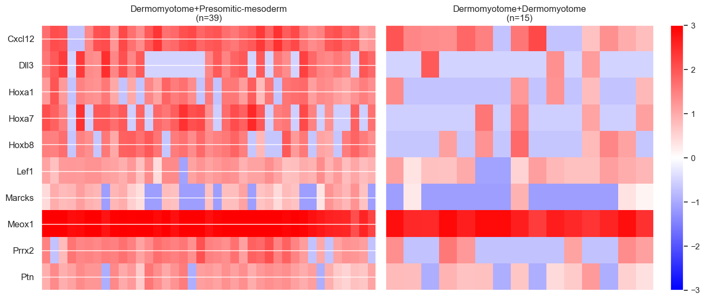
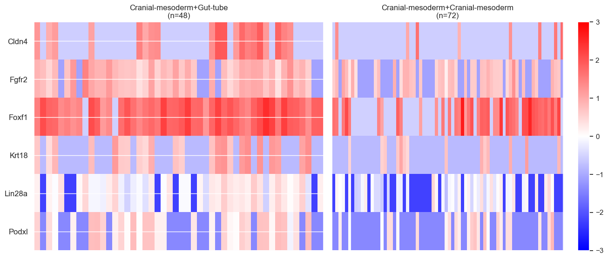
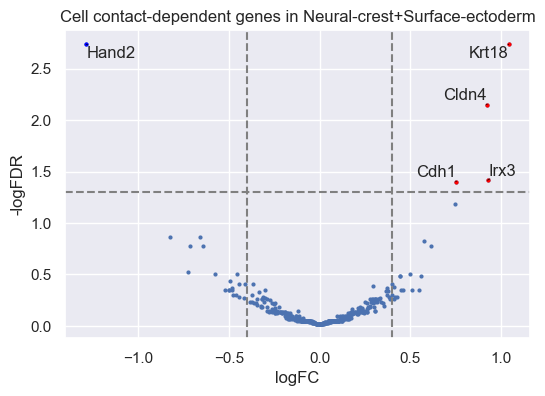
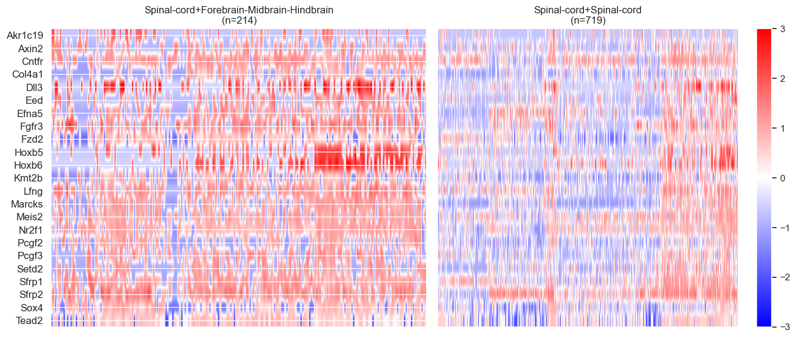
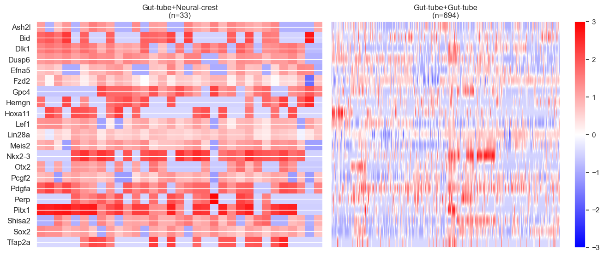
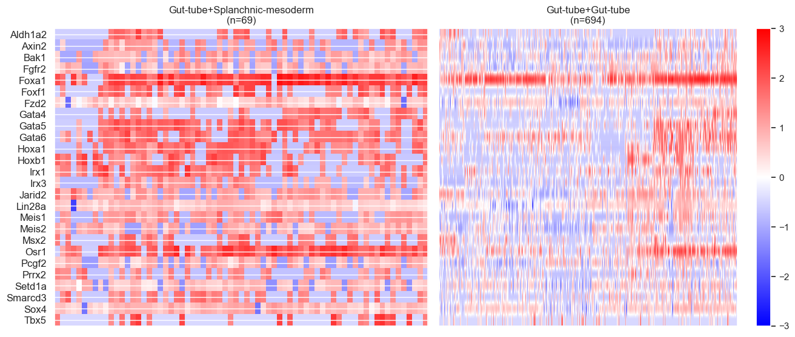
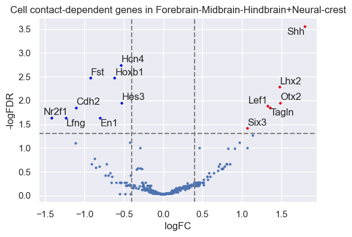

Identifying neighbor-dependent genes from seqFISH data in a mouse embryo
Import packages
[1]:
import squidpy as sq
import scanpy as sc
import pandas as pd
import os
[2]:
import CellNeighborEX
print('Version:', CellNeighborEX.__version__)
Version: 0.0.5
Download data
In this tutorial, we use the mouse embryo seqFISH data pre-processed by Squidpy (https://squidpy.readthedocs.io/en/stable/api/squidpy.datasets.seqfish.html).
[3]:
adata = sq.datasets.seqfish() # 19416 cells x 351 genes
Find nearest neighbors for cell contact
[4]:
# Create a dataframe from the provided AnnData object.
# coord_key (str): Key to access the spatial coordinates in `adata.obsm`.
# celltype_key (str): Key to access the cell type information in `adata.obs`.
df = CellNeighborEX.neighbors.create_dataframe(adata, coord_key='spatial', celltype_key='celltype_mapped_refined')
[5]:
# (Optional) Calculate the closest distance between cells.
# If save=True, the result is saved in the "neighbor_info" folder in the root directory.
closest_distances = CellNeighborEX.neighbors.calculate_closest_distance(df, save=True)
Calculating closest distances: 100%|██████████| 19416/19416 [05:33<00:00, 58.16it/s]
[6]:
# Check the path of your root directory.
os.getcwd()
[6]:
'/Users/kimh15/Downloads'
[7]:
# Detect neighbors using squidpy and retrieve the spatial connectivity matrix.
matrix = CellNeighborEX.neighbors.detect_neighbors(adata, coord_key='spatial', type='generic', knn=None, radius_value=None, delaunay=True)
# Calculate the number of neighbors for each cell.
neiNum = CellNeighborEX.neighbors.get_neighbors(matrix)
[ ]:
# Processes the dataframe by adding additional columns based on the neighbor matrix and neighbor counts.
# If save=True, the result is saved in the "neighbor_info" folder in the root directory.
df_processed = CellNeighborEX.neighbors.process_dataframe(df, matrix, neiNum, save=True)
[9]:
df_processed.head(5)
[9]:
| barcode | first_type | second_type | celltype1 | celltype2 | x | y | prop1 | prop2 | |
|---|---|---|---|---|---|---|---|---|---|
| 0 | embryo1_Pos0_cell10_z5 | 12 | 11 | Lateral-plate-mesoderm | Intermediate-mesoderm | 0.708437 | -2.707126 | 1.0 | 0.0 |
| 1 | embryo1_Pos0_cell100_z2 | 7 | 13 | Erythroid | Low-quality | 0.961726 | -2.943951 | 1.0 | 0.0 |
| 2 | embryo1_Pos0_cell102_z2 | 9 | 9 | Gut-tube | Gut-tube | 0.983054 | -3.284372 | 1.0 | 0.0 |
| 3 | embryo1_Pos0_cell102_z5 | 6 | 9 | Endothelium | Gut-tube | 0.993388 | -3.200491 | 1.0 | 0.0 |
| 4 | embryo1_Pos0_cell103_z5 | 12 | 0 | Lateral-plate-mesoderm | Allantois | 0.983855 | -2.634190 | 1.0 | 0.0 |
Categorize cells into heterotypic neighbors and homotypic neighbors for each cell type
To run CellNeighborEX, information on cell type annotation, spatial location, and expression values is required. Specifically, we need two types of input: (i) data files categorized per cell type, and (ii) log-normalized expression data.
Generate data files categorized per cell type
[ ]:
# All categorzied input files are saved in the "categorized_data folder" in the root directory.
CellNeighborEX.categorization.generate_input_files(data_type = "Image", df = df_processed, sample_size=30, min_sample_size=1)
[11]:
# Set the path of the directory where all the categorized data files are saved.
path_categorization = '/Users/kimh15/Downloads/categorized_data/'
# (Optional) Remove categorized data files with a specific keyword: this function can be used to exclude unwanted cell types.
specific_keyword = 'Low-quality' # In the seqFISH data, 'Low-quality' is a unwanted cell type.
CellNeighborEX.DEanalysis.delete_files_with_keyword(path_categorization, specific_keyword)
Deleted file: /Users/kimh15/Downloads/categorized_data/neiCombUnique_categorized_Gut-tube+Low-quality.csv
Deleted file: /Users/kimh15/Downloads/categorized_data/neiCombUnique_categorized_Low-quality+Erythroid.csv
Deleted file: /Users/kimh15/Downloads/categorized_data/index_categorized_Low-quality+Erythroid.csv
Deleted file: /Users/kimh15/Downloads/categorized_data/matchComb_categorized_Low-quality+Forebrain-Midbrain-Hindbrain.csv
Deleted file: /Users/kimh15/Downloads/categorized_data/prop_categorized_Surface-ectoderm+Low-quality.csv
Deleted file: /Users/kimh15/Downloads/categorized_data/matchComb_categorized_Low-quality+Endothelium.csv
Deleted file: /Users/kimh15/Downloads/categorized_data/matchComb_categorized_Low-quality+Spinal-cord.csv
Deleted file: /Users/kimh15/Downloads/categorized_data/prop_categorized_Low-quality+Spinal-cord.csv
Deleted file: /Users/kimh15/Downloads/categorized_data/prop_categorized_Low-quality+Endothelium.csv
Deleted file: /Users/kimh15/Downloads/categorized_data/neiCombUnique_categorized_Forebrain-Midbrain-Hindbrain+Low-quality.csv
Deleted file: /Users/kimh15/Downloads/categorized_data/index_categorized_Spinal-cord+Low-quality.csv
Deleted file: /Users/kimh15/Downloads/categorized_data/neiCombUnique_categorized_Splanchnic-mesoderm+Low-quality.csv
Deleted file: /Users/kimh15/Downloads/categorized_data/prop_categorized_Forebrain-Midbrain-Hindbrain+Low-quality.csv
Deleted file: /Users/kimh15/Downloads/categorized_data/matchComb_categorized_Low-quality+Erythroid.csv
Deleted file: /Users/kimh15/Downloads/categorized_data/matchComb_categorized_Surface-ectoderm+Low-quality.csv
Deleted file: /Users/kimh15/Downloads/categorized_data/neiCombUnique_categorized_Erythroid+Low-quality.csv
Deleted file: /Users/kimh15/Downloads/categorized_data/index_categorized_Surface-ectoderm+Low-quality.csv
Deleted file: /Users/kimh15/Downloads/categorized_data/neiCombUnique_categorized_Low-quality+Endothelium.csv
Deleted file: /Users/kimh15/Downloads/categorized_data/neiCombUnique_categorized_Low-quality+Spinal-cord.csv
Deleted file: /Users/kimh15/Downloads/categorized_data/index_categorized_Erythroid+Low-quality.csv
Deleted file: /Users/kimh15/Downloads/categorized_data/prop_categorized_Splanchnic-mesoderm+Low-quality.csv
Deleted file: /Users/kimh15/Downloads/categorized_data/matchComb_categorized_Splanchnic-mesoderm+Low-quality.csv
Deleted file: /Users/kimh15/Downloads/categorized_data/index_categorized_Low-quality+Forebrain-Midbrain-Hindbrain.csv
Deleted file: /Users/kimh15/Downloads/categorized_data/matchComb_categorized_Erythroid+Low-quality.csv
Deleted file: /Users/kimh15/Downloads/categorized_data/neiCombUnique_categorized_Low-quality+Neural-crest.csv
Deleted file: /Users/kimh15/Downloads/categorized_data/index_categorized_Splanchnic-mesoderm+Low-quality.csv
Deleted file: /Users/kimh15/Downloads/categorized_data/index_categorized_Forebrain-Midbrain-Hindbrain+Low-quality.csv
Deleted file: /Users/kimh15/Downloads/categorized_data/neiCombUnique_categorized_Surface-ectoderm+Low-quality.csv
Deleted file: /Users/kimh15/Downloads/categorized_data/matchComb_categorized_Gut-tube+Low-quality.csv
Deleted file: /Users/kimh15/Downloads/categorized_data/prop_categorized_Erythroid+Low-quality.csv
Deleted file: /Users/kimh15/Downloads/categorized_data/neiCombUnique_categorized_Neural-crest+Low-quality.csv
Deleted file: /Users/kimh15/Downloads/categorized_data/neiCombUnique_categorized_Spinal-cord+Low-quality.csv
Deleted file: /Users/kimh15/Downloads/categorized_data/index_categorized_Gut-tube+Low-quality.csv
Deleted file: /Users/kimh15/Downloads/categorized_data/index_categorized_Low-quality+Neural-crest.csv
Deleted file: /Users/kimh15/Downloads/categorized_data/index_categorized_Low-quality+Spinal-cord.csv
Deleted file: /Users/kimh15/Downloads/categorized_data/neiCombUnique_categorized_Low-quality+Forebrain-Midbrain-Hindbrain.csv
Deleted file: /Users/kimh15/Downloads/categorized_data/index_categorized_Low-quality+Endothelium.csv
Deleted file: /Users/kimh15/Downloads/categorized_data/matchComb_categorized_Neural-crest+Low-quality.csv
Deleted file: /Users/kimh15/Downloads/categorized_data/prop_categorized_Low-quality+Forebrain-Midbrain-Hindbrain.csv
Deleted file: /Users/kimh15/Downloads/categorized_data/prop_categorized_Neural-crest+Low-quality.csv
Deleted file: /Users/kimh15/Downloads/categorized_data/prop_categorized_Low-quality+Neural-crest.csv
Deleted file: /Users/kimh15/Downloads/categorized_data/matchComb_categorized_Forebrain-Midbrain-Hindbrain+Low-quality.csv
Deleted file: /Users/kimh15/Downloads/categorized_data/prop_categorized_Spinal-cord+Low-quality.csv
Deleted file: /Users/kimh15/Downloads/categorized_data/matchComb_categorized_Low-quality+Neural-crest.csv
Deleted file: /Users/kimh15/Downloads/categorized_data/matchComb_categorized_Spinal-cord+Low-quality.csv
Deleted file: /Users/kimh15/Downloads/categorized_data/prop_categorized_Gut-tube+Low-quality.csv
Deleted file: /Users/kimh15/Downloads/categorized_data/prop_categorized_Low-quality+Erythroid.csv
Deleted file: /Users/kimh15/Downloads/categorized_data/index_categorized_Neural-crest+Low-quality.csv
Produce log-normalized expression data
[ ]:
# Normalize gene expression data.
barcodes = df_processed['barcode'].tolist()
adata = adata[barcodes, :]
sc.pp.normalize_total(adata, target_sum=1e4) # normlization
sc.pp.log1p(adata) # log-transform
[13]:
# Save the data into dataframes.
df_cell_id = pd.DataFrame(adata.obs.index)
df_gene_name = pd.DataFrame(adata.var.index)
df_log_data = adata.T.to_df()
df_log_data = df_log_data.reset_index(drop=True) # row indices are represented as numbers.
[14]:
df_log_data.head(5)
[14]:
| embryo1_Pos0_cell10_z5 | embryo1_Pos0_cell100_z2 | embryo1_Pos0_cell102_z2 | embryo1_Pos0_cell102_z5 | embryo1_Pos0_cell103_z5 | embryo1_Pos0_cell105_z2 | embryo1_Pos0_cell105_z5 | embryo1_Pos0_cell106_z5 | embryo1_Pos0_cell107_z2 | embryo1_Pos0_cell108_z2 | ... | embryo1_Pos28_cell79_z5 | embryo1_Pos28_cell80_z5 | embryo1_Pos28_cell83_z5 | embryo1_Pos28_cell84_z5 | embryo1_Pos28_cell89_z2 | embryo1_Pos28_cell90_z2 | embryo1_Pos28_cell90_z5 | embryo1_Pos28_cell92_z2 | embryo1_Pos28_cell96_z2 | embryo1_Pos28_cell97_z2 | |
|---|---|---|---|---|---|---|---|---|---|---|---|---|---|---|---|---|---|---|---|---|---|
| 0 | 0.0 | 0.000000 | 0.000000 | 0.000000 | 3.241421 | 0.000000 | 0.000000 | 0.000000 | 0.000000 | 0.0 | ... | 0.000000 | 0.0 | 0.0 | 0.000000 | 0.0 | 0.000000 | 3.971863 | 0.0 | 0.000000 | 0.0 |
| 1 | 0.0 | 5.235994 | 0.000000 | 3.666001 | 0.000000 | 5.313305 | 5.476862 | 0.000000 | 4.296793 | 0.0 | ... | 3.218108 | 0.0 | 0.0 | 0.000000 | 0.0 | 0.000000 | 0.000000 | 0.0 | 3.660449 | 0.0 |
| 2 | 0.0 | 0.000000 | 2.508516 | 2.998110 | 3.914820 | 0.000000 | 0.000000 | 0.000000 | 4.296793 | 0.0 | ... | 3.218108 | 0.0 | 0.0 | 4.003023 | 0.0 | 3.193126 | 0.000000 | 0.0 | 0.000000 | 0.0 |
| 3 | 0.0 | 0.000000 | 0.000000 | 0.000000 | 3.241421 | 4.625072 | 0.000000 | 3.745315 | 0.000000 | 0.0 | ... | 0.000000 | 0.0 | 0.0 | 0.000000 | 0.0 | 3.865539 | 0.000000 | 0.0 | 0.000000 | 0.0 |
| 4 | 0.0 | 0.000000 | 2.508516 | 0.000000 | 3.241421 | 0.000000 | 0.000000 | 3.745315 | 0.000000 | 0.0 | ... | 0.000000 | 0.0 | 0.0 | 0.000000 | 0.0 | 0.000000 | 0.000000 | 0.0 | 0.000000 | 0.0 |
5 rows × 11797 columns
[15]:
# The length of df_processed must be the same as the length of df_cell_id.
print(len(df_cell_id))
print(len(df_processed))
11797
11797
Perform neighbor-dependent gene expression analysis
[16]:
# Set argument values for CellNeighborEX.DEanalysis.analyze_data().
data_type = "Image" # Image: image-based ST data, NGS: NGS-based ST data
lrCutoff = 0.4 # log ratio
pCutoff = 0.01 # p-value
pCutoff2 = 0.05 # false discovery rate
direction = 'up' # up: up-reguated genes, down: down-regulated genes
normality_test = False # True: depending on the result of the normality test, the statistical test is determined. If the data is normal, the parametric test is used. Otherwise, the non-parametric test is used.
# False: when sample size (number of cells/spots) is larger than 30, the parameteric test is used. Otherwise, the non-parametric test is used.
top_genes = 10 # Top 10 DEGs are annotated in the volcano plot.
[17]:
# If save=True, all result files are saved in the "DE_results" folder in the root directory.
DEG_list = CellNeighborEX.DEanalysis.analyze_data(df_cell_id, df_gene_name, df_log_data, path_categorization, data_type, lrCutoff, pCutoff, pCutoff2, direction, normality_test, top_genes, save=True)
neighbor-dependent gene expression analysis: 0%| | 0/24 [00:00<?, ?it/s]/opt/anaconda3/envs/CellNeighborEX-env/lib/python3.10/site-packages/CellNeighborEX/DEanalysis.py:1131: FutureWarning: Support for multi-dimensional indexing (e.g. `obj[:, None]`) is deprecated and will be removed in a future version. Convert to a numpy array before indexing instead.
log_data_zvalue = (log_data_total - mean_values[:, np.newaxis]) / std_values[:, np.newaxis]
0
/opt/anaconda3/envs/CellNeighborEX-env/lib/python3.10/site-packages/CellNeighborEX/DEanalysis.py:660: UserWarning: FixedFormatter should only be used together with FixedLocator
plt.gca().set_yticklabels(a, fontsize=12) # Sets the y-axis tick labels with fontsize 12
neighbor-dependent gene expression analysis: 4%|▍ | 1/24 [00:04<01:46, 4.64s/it]/opt/anaconda3/envs/CellNeighborEX-env/lib/python3.10/site-packages/CellNeighborEX/DEanalysis.py:1131: FutureWarning: Support for multi-dimensional indexing (e.g. `obj[:, None]`) is deprecated and will be removed in a future version. Convert to a numpy array before indexing instead.
log_data_zvalue = (log_data_total - mean_values[:, np.newaxis]) / std_values[:, np.newaxis]
1
/opt/anaconda3/envs/CellNeighborEX-env/lib/python3.10/site-packages/CellNeighborEX/DEanalysis.py:660: UserWarning: FixedFormatter should only be used together with FixedLocator
plt.gca().set_yticklabels(a, fontsize=12) # Sets the y-axis tick labels with fontsize 12
neighbor-dependent gene expression analysis: 8%|▊ | 2/24 [00:06<01:04, 2.91s/it]/opt/anaconda3/envs/CellNeighborEX-env/lib/python3.10/site-packages/CellNeighborEX/DEanalysis.py:1131: FutureWarning: Support for multi-dimensional indexing (e.g. `obj[:, None]`) is deprecated and will be removed in a future version. Convert to a numpy array before indexing instead.
log_data_zvalue = (log_data_total - mean_values[:, np.newaxis]) / std_values[:, np.newaxis]
2
/opt/anaconda3/envs/CellNeighborEX-env/lib/python3.10/site-packages/CellNeighborEX/DEanalysis.py:660: UserWarning: FixedFormatter should only be used together with FixedLocator
plt.gca().set_yticklabels(a, fontsize=12) # Sets the y-axis tick labels with fontsize 12

neighbor-dependent gene expression analysis: 12%|█▎ | 3/24 [00:10<01:09, 3.32s/it]/opt/anaconda3/envs/CellNeighborEX-env/lib/python3.10/site-packages/CellNeighborEX/DEanalysis.py:1131: FutureWarning: Support for multi-dimensional indexing (e.g. `obj[:, None]`) is deprecated and will be removed in a future version. Convert to a numpy array before indexing instead.
log_data_zvalue = (log_data_total - mean_values[:, np.newaxis]) / std_values[:, np.newaxis]
/opt/anaconda3/envs/CellNeighborEX-env/lib/python3.10/site-packages/CellNeighborEX/DEanalysis.py:1131: FutureWarning: Support for multi-dimensional indexing (e.g. `obj[:, None]`) is deprecated and will be removed in a future version. Convert to a numpy array before indexing instead.
log_data_zvalue = (log_data_total - mean_values[:, np.newaxis]) / std_values[:, np.newaxis]
3
4
/opt/anaconda3/envs/CellNeighborEX-env/lib/python3.10/site-packages/CellNeighborEX/DEanalysis.py:660: UserWarning: FixedFormatter should only be used together with FixedLocator
plt.gca().set_yticklabels(a, fontsize=12) # Sets the y-axis tick labels with fontsize 12

neighbor-dependent gene expression analysis: 21%|██ | 5/24 [00:13<00:43, 2.30s/it]/opt/anaconda3/envs/CellNeighborEX-env/lib/python3.10/site-packages/CellNeighborEX/DEanalysis.py:1131: FutureWarning: Support for multi-dimensional indexing (e.g. `obj[:, None]`) is deprecated and will be removed in a future version. Convert to a numpy array before indexing instead.
log_data_zvalue = (log_data_total - mean_values[:, np.newaxis]) / std_values[:, np.newaxis]
5
/opt/anaconda3/envs/CellNeighborEX-env/lib/python3.10/site-packages/CellNeighborEX/DEanalysis.py:660: UserWarning: FixedFormatter should only be used together with FixedLocator
plt.gca().set_yticklabels(a, fontsize=12) # Sets the y-axis tick labels with fontsize 12
neighbor-dependent gene expression analysis: 25%|██▌ | 6/24 [00:15<00:39, 2.17s/it]/opt/anaconda3/envs/CellNeighborEX-env/lib/python3.10/site-packages/CellNeighborEX/DEanalysis.py:1131: FutureWarning: Support for multi-dimensional indexing (e.g. `obj[:, None]`) is deprecated and will be removed in a future version. Convert to a numpy array before indexing instead.
log_data_zvalue = (log_data_total - mean_values[:, np.newaxis]) / std_values[:, np.newaxis]
6
/opt/anaconda3/envs/CellNeighborEX-env/lib/python3.10/site-packages/CellNeighborEX/DEanalysis.py:660: UserWarning: FixedFormatter should only be used together with FixedLocator
plt.gca().set_yticklabels(a, fontsize=12) # Sets the y-axis tick labels with fontsize 12
neighbor-dependent gene expression analysis: 29%|██▉ | 7/24 [00:18<00:41, 2.44s/it]/opt/anaconda3/envs/CellNeighborEX-env/lib/python3.10/site-packages/CellNeighborEX/DEanalysis.py:1131: FutureWarning: Support for multi-dimensional indexing (e.g. `obj[:, None]`) is deprecated and will be removed in a future version. Convert to a numpy array before indexing instead.
log_data_zvalue = (log_data_total - mean_values[:, np.newaxis]) / std_values[:, np.newaxis]
7

/opt/anaconda3/envs/CellNeighborEX-env/lib/python3.10/site-packages/CellNeighborEX/DEanalysis.py:660: UserWarning: FixedFormatter should only be used together with FixedLocator
plt.gca().set_yticklabels(a, fontsize=12) # Sets the y-axis tick labels with fontsize 12
neighbor-dependent gene expression analysis: 33%|███▎ | 8/24 [00:21<00:42, 2.63s/it]/opt/anaconda3/envs/CellNeighborEX-env/lib/python3.10/site-packages/CellNeighborEX/DEanalysis.py:1131: FutureWarning: Support for multi-dimensional indexing (e.g. `obj[:, None]`) is deprecated and will be removed in a future version. Convert to a numpy array before indexing instead.
log_data_zvalue = (log_data_total - mean_values[:, np.newaxis]) / std_values[:, np.newaxis]
8
/opt/anaconda3/envs/CellNeighborEX-env/lib/python3.10/site-packages/CellNeighborEX/DEanalysis.py:660: UserWarning: FixedFormatter should only be used together with FixedLocator
plt.gca().set_yticklabels(a, fontsize=12) # Sets the y-axis tick labels with fontsize 12
neighbor-dependent gene expression analysis: 38%|███▊ | 9/24 [00:26<00:50, 3.35s/it]/opt/anaconda3/envs/CellNeighborEX-env/lib/python3.10/site-packages/CellNeighborEX/DEanalysis.py:1131: FutureWarning: Support for multi-dimensional indexing (e.g. `obj[:, None]`) is deprecated and will be removed in a future version. Convert to a numpy array before indexing instead.
log_data_zvalue = (log_data_total - mean_values[:, np.newaxis]) / std_values[:, np.newaxis]
9
/opt/anaconda3/envs/CellNeighborEX-env/lib/python3.10/site-packages/CellNeighborEX/DEanalysis.py:660: UserWarning: FixedFormatter should only be used together with FixedLocator
plt.gca().set_yticklabels(a, fontsize=12) # Sets the y-axis tick labels with fontsize 12

neighbor-dependent gene expression analysis: 42%|████▏ | 10/24 [00:28<00:40, 2.88s/it]/opt/anaconda3/envs/CellNeighborEX-env/lib/python3.10/site-packages/CellNeighborEX/DEanalysis.py:1131: FutureWarning: Support for multi-dimensional indexing (e.g. `obj[:, None]`) is deprecated and will be removed in a future version. Convert to a numpy array before indexing instead.
log_data_zvalue = (log_data_total - mean_values[:, np.newaxis]) / std_values[:, np.newaxis]
10
/opt/anaconda3/envs/CellNeighborEX-env/lib/python3.10/site-packages/CellNeighborEX/DEanalysis.py:660: UserWarning: FixedFormatter should only be used together with FixedLocator
plt.gca().set_yticklabels(a, fontsize=12) # Sets the y-axis tick labels with fontsize 12

neighbor-dependent gene expression analysis: 46%|████▌ | 11/24 [00:30<00:34, 2.69s/it]/opt/anaconda3/envs/CellNeighborEX-env/lib/python3.10/site-packages/CellNeighborEX/DEanalysis.py:1131: FutureWarning: Support for multi-dimensional indexing (e.g. `obj[:, None]`) is deprecated and will be removed in a future version. Convert to a numpy array before indexing instead.
log_data_zvalue = (log_data_total - mean_values[:, np.newaxis]) / std_values[:, np.newaxis]
11
/opt/anaconda3/envs/CellNeighborEX-env/lib/python3.10/site-packages/CellNeighborEX/DEanalysis.py:660: UserWarning: FixedFormatter should only be used together with FixedLocator
plt.gca().set_yticklabels(a, fontsize=12) # Sets the y-axis tick labels with fontsize 12
neighbor-dependent gene expression analysis: 50%|█████ | 12/24 [00:32<00:31, 2.66s/it]/opt/anaconda3/envs/CellNeighborEX-env/lib/python3.10/site-packages/CellNeighborEX/DEanalysis.py:1131: FutureWarning: Support for multi-dimensional indexing (e.g. `obj[:, None]`) is deprecated and will be removed in a future version. Convert to a numpy array before indexing instead.
log_data_zvalue = (log_data_total - mean_values[:, np.newaxis]) / std_values[:, np.newaxis]
12
/opt/anaconda3/envs/CellNeighborEX-env/lib/python3.10/site-packages/CellNeighborEX/DEanalysis.py:660: UserWarning: FixedFormatter should only be used together with FixedLocator
plt.gca().set_yticklabels(a, fontsize=12) # Sets the y-axis tick labels with fontsize 12
neighbor-dependent gene expression analysis: 54%|█████▍ | 13/24 [00:34<00:26, 2.44s/it]/opt/anaconda3/envs/CellNeighborEX-env/lib/python3.10/site-packages/CellNeighborEX/DEanalysis.py:1131: FutureWarning: Support for multi-dimensional indexing (e.g. `obj[:, None]`) is deprecated and will be removed in a future version. Convert to a numpy array before indexing instead.
log_data_zvalue = (log_data_total - mean_values[:, np.newaxis]) / std_values[:, np.newaxis]
13
/opt/anaconda3/envs/CellNeighborEX-env/lib/python3.10/site-packages/CellNeighborEX/DEanalysis.py:660: UserWarning: FixedFormatter should only be used together with FixedLocator
plt.gca().set_yticklabels(a, fontsize=12) # Sets the y-axis tick labels with fontsize 12
neighbor-dependent gene expression analysis: 58%|█████▊ | 14/24 [00:36<00:22, 2.28s/it]/opt/anaconda3/envs/CellNeighborEX-env/lib/python3.10/site-packages/CellNeighborEX/DEanalysis.py:1131: FutureWarning: Support for multi-dimensional indexing (e.g. `obj[:, None]`) is deprecated and will be removed in a future version. Convert to a numpy array before indexing instead.
log_data_zvalue = (log_data_total - mean_values[:, np.newaxis]) / std_values[:, np.newaxis]
14

/opt/anaconda3/envs/CellNeighborEX-env/lib/python3.10/site-packages/CellNeighborEX/DEanalysis.py:660: UserWarning: FixedFormatter should only be used together with FixedLocator
plt.gca().set_yticklabels(a, fontsize=12) # Sets the y-axis tick labels with fontsize 12

neighbor-dependent gene expression analysis: 62%|██████▎ | 15/24 [00:41<00:27, 3.03s/it]/opt/anaconda3/envs/CellNeighborEX-env/lib/python3.10/site-packages/CellNeighborEX/DEanalysis.py:1131: FutureWarning: Support for multi-dimensional indexing (e.g. `obj[:, None]`) is deprecated and will be removed in a future version. Convert to a numpy array before indexing instead.
log_data_zvalue = (log_data_total - mean_values[:, np.newaxis]) / std_values[:, np.newaxis]
15
/opt/anaconda3/envs/CellNeighborEX-env/lib/python3.10/site-packages/CellNeighborEX/DEanalysis.py:660: UserWarning: FixedFormatter should only be used together with FixedLocator
plt.gca().set_yticklabels(a, fontsize=12) # Sets the y-axis tick labels with fontsize 12
neighbor-dependent gene expression analysis: 67%|██████▋ | 16/24 [00:45<00:27, 3.46s/it]/opt/anaconda3/envs/CellNeighborEX-env/lib/python3.10/site-packages/CellNeighborEX/DEanalysis.py:1131: FutureWarning: Support for multi-dimensional indexing (e.g. `obj[:, None]`) is deprecated and will be removed in a future version. Convert to a numpy array before indexing instead.
log_data_zvalue = (log_data_total - mean_values[:, np.newaxis]) / std_values[:, np.newaxis]
16
/opt/anaconda3/envs/CellNeighborEX-env/lib/python3.10/site-packages/CellNeighborEX/DEanalysis.py:660: UserWarning: FixedFormatter should only be used together with FixedLocator
plt.gca().set_yticklabels(a, fontsize=12) # Sets the y-axis tick labels with fontsize 12
neighbor-dependent gene expression analysis: 71%|███████ | 17/24 [00:48<00:22, 3.18s/it]/opt/anaconda3/envs/CellNeighborEX-env/lib/python3.10/site-packages/CellNeighborEX/DEanalysis.py:1131: FutureWarning: Support for multi-dimensional indexing (e.g. `obj[:, None]`) is deprecated and will be removed in a future version. Convert to a numpy array before indexing instead.
log_data_zvalue = (log_data_total - mean_values[:, np.newaxis]) / std_values[:, np.newaxis]
17

/opt/anaconda3/envs/CellNeighborEX-env/lib/python3.10/site-packages/CellNeighborEX/DEanalysis.py:660: UserWarning: FixedFormatter should only be used together with FixedLocator
plt.gca().set_yticklabels(a, fontsize=12) # Sets the y-axis tick labels with fontsize 12
neighbor-dependent gene expression analysis: 75%|███████▌ | 18/24 [00:51<00:19, 3.20s/it]/opt/anaconda3/envs/CellNeighborEX-env/lib/python3.10/site-packages/CellNeighborEX/DEanalysis.py:1131: FutureWarning: Support for multi-dimensional indexing (e.g. `obj[:, None]`) is deprecated and will be removed in a future version. Convert to a numpy array before indexing instead.
log_data_zvalue = (log_data_total - mean_values[:, np.newaxis]) / std_values[:, np.newaxis]
18
neighbor-dependent gene expression analysis: 79%|███████▉ | 19/24 [00:52<00:11, 2.38s/it]/opt/anaconda3/envs/CellNeighborEX-env/lib/python3.10/site-packages/CellNeighborEX/DEanalysis.py:1131: FutureWarning: Support for multi-dimensional indexing (e.g. `obj[:, None]`) is deprecated and will be removed in a future version. Convert to a numpy array before indexing instead.
log_data_zvalue = (log_data_total - mean_values[:, np.newaxis]) / std_values[:, np.newaxis]
19
/opt/anaconda3/envs/CellNeighborEX-env/lib/python3.10/site-packages/CellNeighborEX/DEanalysis.py:660: UserWarning: FixedFormatter should only be used together with FixedLocator
plt.gca().set_yticklabels(a, fontsize=12) # Sets the y-axis tick labels with fontsize 12

neighbor-dependent gene expression analysis: 83%|████████▎ | 20/24 [00:57<00:12, 3.18s/it]/opt/anaconda3/envs/CellNeighborEX-env/lib/python3.10/site-packages/CellNeighborEX/DEanalysis.py:1131: FutureWarning: Support for multi-dimensional indexing (e.g. `obj[:, None]`) is deprecated and will be removed in a future version. Convert to a numpy array before indexing instead.
log_data_zvalue = (log_data_total - mean_values[:, np.newaxis]) / std_values[:, np.newaxis]
20

/opt/anaconda3/envs/CellNeighborEX-env/lib/python3.10/site-packages/CellNeighborEX/DEanalysis.py:660: UserWarning: FixedFormatter should only be used together with FixedLocator
plt.gca().set_yticklabels(a, fontsize=12) # Sets the y-axis tick labels with fontsize 12
neighbor-dependent gene expression analysis: 88%|████████▊ | 21/24 [00:59<00:09, 3.03s/it]/opt/anaconda3/envs/CellNeighborEX-env/lib/python3.10/site-packages/CellNeighborEX/DEanalysis.py:1131: FutureWarning: Support for multi-dimensional indexing (e.g. `obj[:, None]`) is deprecated and will be removed in a future version. Convert to a numpy array before indexing instead.
log_data_zvalue = (log_data_total - mean_values[:, np.newaxis]) / std_values[:, np.newaxis]
21
/opt/anaconda3/envs/CellNeighborEX-env/lib/python3.10/site-packages/CellNeighborEX/DEanalysis.py:660: UserWarning: FixedFormatter should only be used together with FixedLocator
plt.gca().set_yticklabels(a, fontsize=12) # Sets the y-axis tick labels with fontsize 12

neighbor-dependent gene expression analysis: 92%|█████████▏| 22/24 [01:01<00:05, 2.66s/it]/opt/anaconda3/envs/CellNeighborEX-env/lib/python3.10/site-packages/CellNeighborEX/DEanalysis.py:1131: FutureWarning: Support for multi-dimensional indexing (e.g. `obj[:, None]`) is deprecated and will be removed in a future version. Convert to a numpy array before indexing instead.
log_data_zvalue = (log_data_total - mean_values[:, np.newaxis]) / std_values[:, np.newaxis]
22
/opt/anaconda3/envs/CellNeighborEX-env/lib/python3.10/site-packages/CellNeighborEX/DEanalysis.py:660: UserWarning: FixedFormatter should only be used together with FixedLocator
plt.gca().set_yticklabels(a, fontsize=12) # Sets the y-axis tick labels with fontsize 12
neighbor-dependent gene expression analysis: 96%|█████████▌| 23/24 [01:04<00:02, 2.70s/it]/opt/anaconda3/envs/CellNeighborEX-env/lib/python3.10/site-packages/CellNeighborEX/DEanalysis.py:1131: FutureWarning: Support for multi-dimensional indexing (e.g. `obj[:, None]`) is deprecated and will be removed in a future version. Convert to a numpy array before indexing instead.
log_data_zvalue = (log_data_total - mean_values[:, np.newaxis]) / std_values[:, np.newaxis]
23

/opt/anaconda3/envs/CellNeighborEX-env/lib/python3.10/site-packages/CellNeighborEX/DEanalysis.py:660: UserWarning: FixedFormatter should only be used together with FixedLocator
plt.gca().set_yticklabels(a, fontsize=12) # Sets the y-axis tick labels with fontsize 12
neighbor-dependent gene expression analysis: 100%|██████████| 24/24 [01:07<00:00, 2.82s/it]
Visualize neighbor-dependent gene expression in the spatial context
[18]:
# Select a cell type and a DEG for spatial visualization and then load the data.
# For example, Pitx1 is up-regulated when Gut-tube are adjacent to Neural-crest.
path_selected = '/Users/kimh15/Downloads/DE_results/Gut-tube+Neural-crest/'
column_names = ['barcode', 'logdata', 'zscore']
heterotypic = pd.read_csv(path_selected + "Gut-tube+Neural-crest_Pitx1.txt", delimiter=",", names = column_names)
homotypic1 = pd.read_csv(path_selected + "Gut-tube+Gut-tube_Pitx1.txt", delimiter=",", names = column_names)
homotypic2 = pd.read_csv(path_selected + "Neural-crest+Neural-crest_Pitx1.txt", delimiter=",", names = column_names)
heterotypic['type'] = 'Gut-tube+Neural-crest'
homotypic1['type'] = 'Gut-tube+Gut-tube'
homotypic2['type'] = 'Neural-crest'
df_exp = pd.concat([heterotypic, homotypic1, homotypic2])
[ ]:
# Set parameter values.
df_bg, df_red, df_blue, df_black = CellNeighborEX.visualization.set_parameters(df_processed, df_exp, beadsize_bg=5, edgecolor_bg=(0.85,0.85,0.85), beadcolor_bg=(0.85,0.85,0.85), beadsize_red=60, beadsize_blue=30, beadsize_black=30, type_red='Gut-tube+Neural-crest', type_blue='Gut-tube+Gut-tube', type_black='Neural-crest')
[20]:
# Get the spatial map.
# zorder_red, zorder_blue, and zorder_black are parameters that determine the drawing order in the spatial map.
# If save=True, the spatial map is saved in the "spatialMap" folder in the root directory.
CellNeighborEX.visualization.get_spatialPlot(df_bg, df_red, df_blue, df_black, label_red='Gut-tube+Neural-crest', label_blue='Gut-tube+Gut-tube', label_black='Neural-crest', label_gene='Pitx1', zorder_red=3.0, zorder_blue=2.0, zorder_black=4.0, figsize=(20,28), save=True)